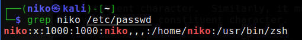
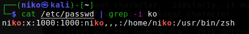

grep -komento
grep -komento etsii sille syötetyt parametrit tiedostosta.
Esimerkkejä
Ylläoleva komento etsii "niko" sanaa /etc/passwd -tiedostosta (lisäämällä -i saadaan hausta "case sensitive")
Tässä tarkastellaan tiedostoa /etc/passwd, jonka jälkeen | grep -i ko, jolloin saadaan passwd tiedostosta "ko" sisältävät rivit.
grep -R komennolla ohjelma käy rekursiivisesti kansiot läpi ja etsii annettua syötettä.